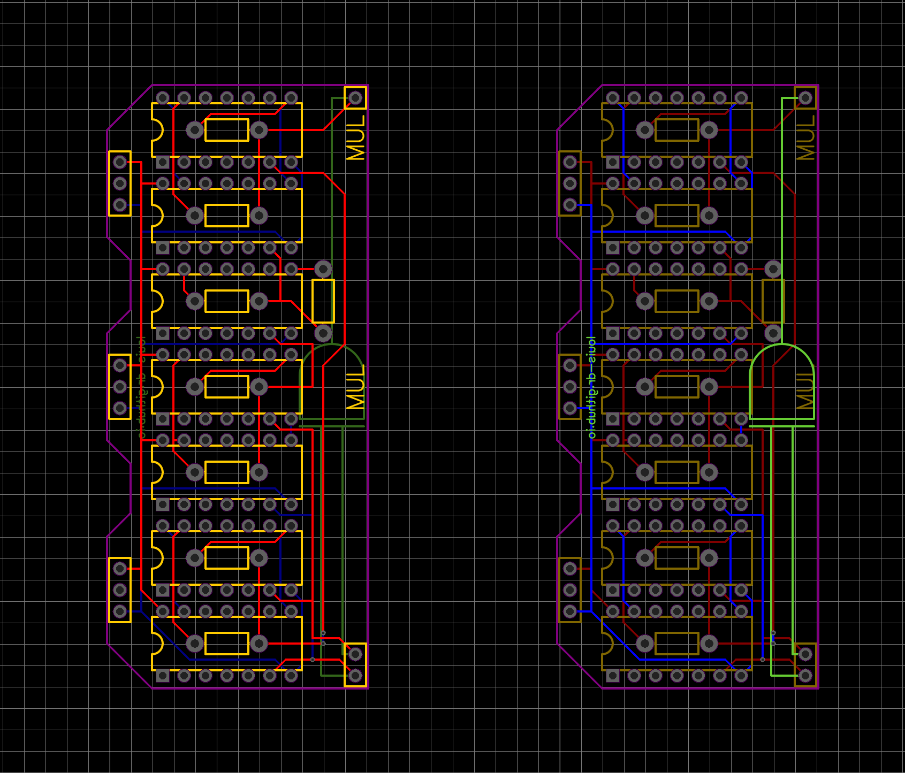
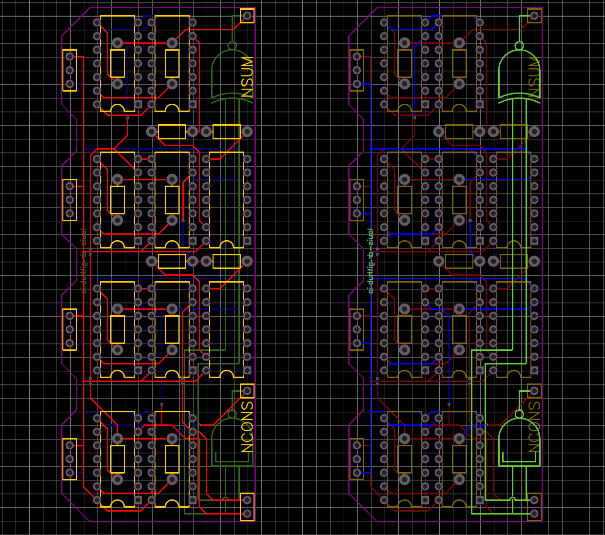
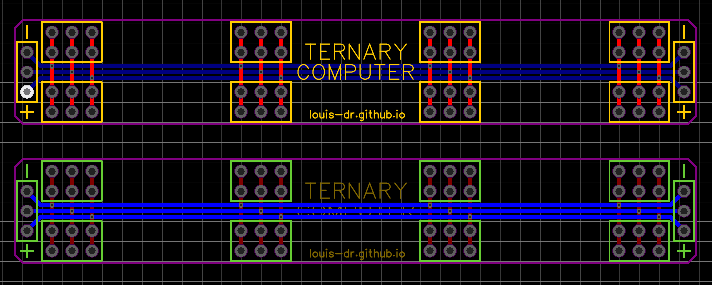

This article is part of my series of projects around Ternary Computing and Processor Design. Click here to see the list of projects of this series.
In a previous article about my Ternary Computer, I built the basic gates (NOT, NAND, NOR, NCONS, NANY) on breadboards using the CD4007 chip. However, the goal is to build a 3-trit ALU, which requires many many gates. Therefore, I decided to manufacture PCBs for the different gates and then build more complex circuits like Lego.
Instead of having a mess cables everywhere for power and data running between free floating PCBs, I decided to mount everything on a structure both for stability, readability and power delivery. The key component is some 40pins triple-width female headers.
Triple-width headers
By connecting the columns into three rails, we can easily mount and power multiple devices with angled male headers on the side.
Then, the PCBs. I designed everything with EasyEDA because it is easy to use, it's simple, I don't need more advanced features and it's integrated with JLCPCB to order the PCBs. I prefer placing the components and routing everything by hand.
As I said in the previous article, here is the list of PCBs :
- 2x(NOT+NNOT+PNOT) = 2 chips
- NAND = 2 chips
- NOR = 2 chips
- NCONS = 2 chips
- NANY = 2 chips
- MUL = 7 chips
- NSUM+NCONS = 10 chips
- 3-trit LED display = 2 chips
- Power rail bridge connector
The basic gates with 2 chips only can fit on a small PCB about 3x4cm. Other require a multiple of this basic size unit. Here are the schematics of the PCBs. To save on cost, I decided to panel multiple together with small 3mm bridges (the smallest JLCPCB accepted) and will just have to cut them and file the edges flat.
Combined panel ; left:front side ; right:back side
MUL gate ; left:front side ; right:back side
NSUM+NCONS gates ; left:front side ; right:back side
Bridge ; left:front side ; right:back side
As you can see I also added labels and schematics to show which board is which gate. I ordered a bunch of them on JLCPCB and got them manufactured and delivered in about a week.
Stacks of cool PCBs !
It will take a bit of time to solder everything in place and I don't have that much free time right now. I still wanted to at least check if it worked. I soldered a NCONS gate and put the chips in.
Stacks of cool PCBs !
Fortunately, It works like a charm. I also tested the header power rails.
Stacks of cool PCBs !
I am very satisfied with how it looks and works. Hopefully the next article will be about putting everything together and finishing the ALU. Stay tuned !
This article is part of my series of projects around Ternary Computing and Processor Design. Click here to see the list of projects of this series.
Go back to the list of projects